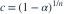

样本来自  ，以 检验 对 。要求检验大小为
，以 检验 对 。要求检验大小为  ，则 c 为？
，则 c 为？
，以 检验 对 。要求检验大小为 ，则 c 为？- A
- B
- C
- D
我已思考，展开答案与解析
正确答案：D
- 对于固定 c，原假设内拒绝概率在 达最大。
- 在该边界 ，所以

。
易错提醒最大值检验的尾概率为 1−cⁿ，不是 cⁿ。
JYSG · 432精选 · 册内复旦大学432·2022年·十一(1)；PDF第38页（印刷页36）
原大题拆解
，以 检验 对 。要求检验大小为 ，则 c 为？
。JYSG · 432精选 · 册内复旦大学432·2022年·十一(1)；PDF第38页（印刷页36）
原大题拆解